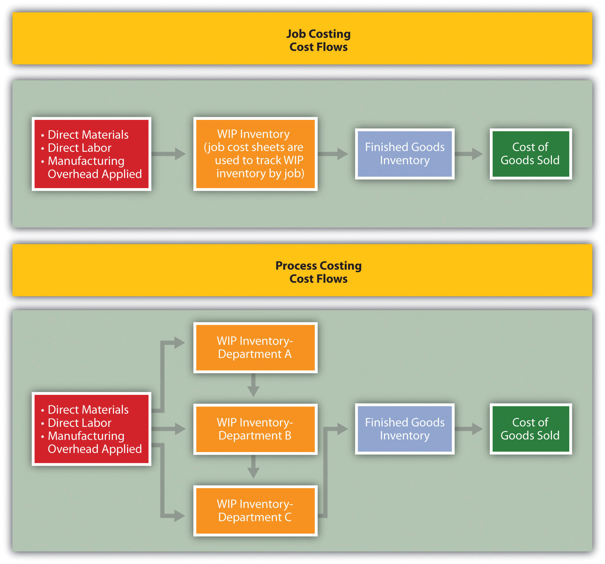
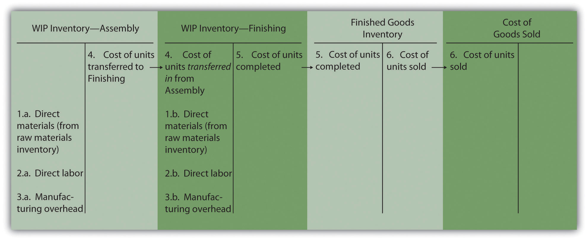
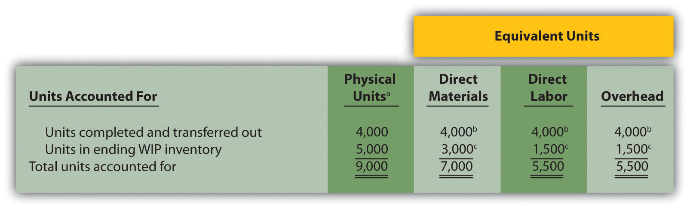
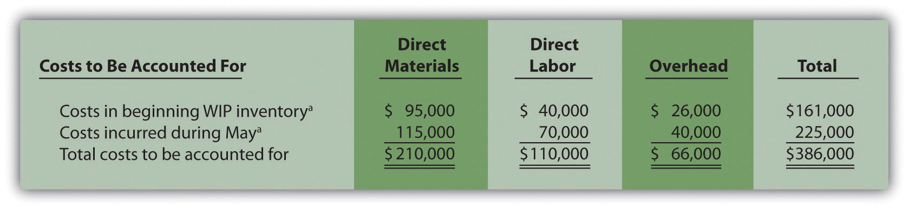
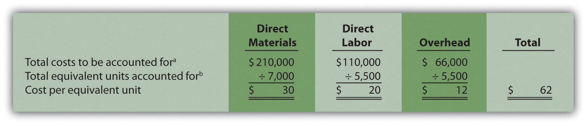
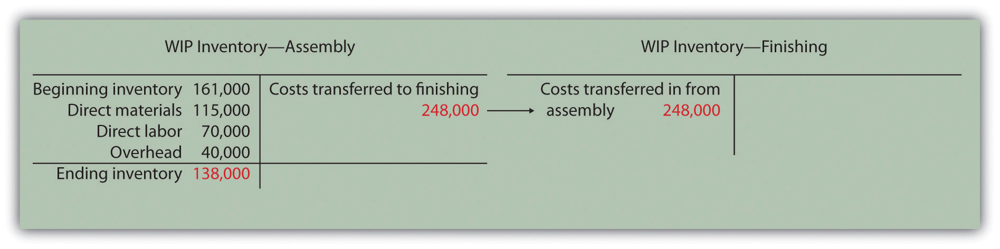
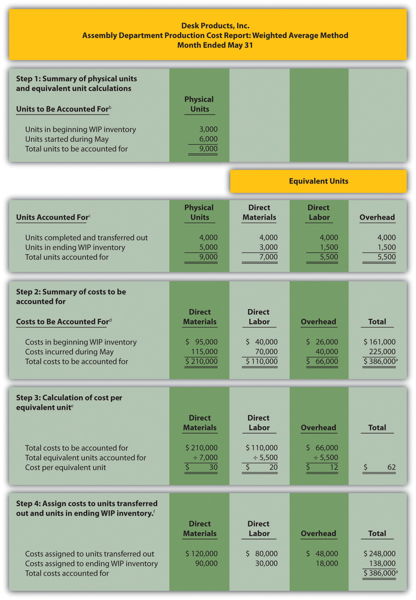

Ann Watkins owns and operates a company that mass produces wood desks used in classrooms throughout the world. Ann’s company, Desk Products, Inc., maintains an advantage over its competitors by producing one desk in large quantities—4,000 to 8,000 desks per month—using a universally accepted design. This enables the company to buy materials in bulk, often leading to volume price discounts from suppliers. Because the exact same desk is produced for all customers, Desk Products purchases precut wood materials from suppliers. As a result, Desk Products can limit the production process to two processing departments—Assembly and Finishing. The Assembly department requisitions precut materials and hardware from the raw materials storeroom, assembles each desk, and moves the assembled desks to the Finishing department. The Finishing department sands and paints each desk and moves completed desks to the finished goods warehouse.
A new competitor recently began producing a similar desk, and Ann is concerned about whether Desk Products’ production costs are reasonable. In particular, Ann is concerned about the costs in the Assembly department since this department is responsible for the majority of the company’s production costs. Ann talks with the accountant at Desk Products, John Fuller, to investigate.
| Ann: | John, as you know, we have a new competitor that is aggressively going after our customers. It looks as if we will have to focus on keeping costs low to compete. The Assembly department is my biggest concern, and it would help if I knew the cost of each desk that goes through this department. |
| John: | Although we don’t track production costs for each desk individually, we do use a process costing system that assigns costs to each batch of desks produced. This system enables us to calculate a cost per unit as the products move through the Assembly department. |
| Ann: | Excellent! Can you get me the cost information for the Assembly department for last month? |
| John: | Sure, I’ll put together a production cost report for you by the end of the week. |
We return to Desk Products, Inc., throughout the chapter to explain how process costing systems work.
Question: A process costing systemA system of assigning costs used by companies that produce similar or identical units of product in batches employing a consistent process. is used by companies that produce similar or identical units of product in batches employing a consistent process. Examples of companies that use process costing include Chevron Corporation (petroleum products), the Wrigley Company (chewing gum), and Pittsburgh Paints (paint). A job costing systemA system of assigning costs used by companies that produce unique products or jobs. is used by companies that produce unique products or jobs. Examples of companies that use job costing systems include Boeing (airplanes), Lockheed Martin (advanced technology systems), and Deloitte & Touche (accounting). What are the similarities and differences between job costing and process costing systems?
Answer: Although these systems have marked differences, they are also similar in many ways. (As you read through this section, refer to Chapter 1 "What Is Managerial Accounting?" for a review of important terms if necessary.) Recall the three inventory accounts that accountants use to track product cost information—raw materials inventory, work-in-process inventory, and finished goods inventory. These three inventory accounts are used to record product cost information for both process costing and job costing systems. However, several work-in-process inventory accounts are typically used in a process costing system to track the flow of product costs through each production department. Thus each department has its own work-in-process inventory account. (For the purposes of this chapter, assume each department represents a production process. This explains the term process costing because we are tracking costs by process.) The sum of all work-in-process inventory accounts represents total work in process for the company.
Recall the three components of product costs—direct materials, direct labor, and manufacturing overhead. Assigning these product costs to individual products remains an important goal for process costing, just as with job costing. However, instead of assigning product costs to individual jobs (shown on a job cost sheet), process costing assigns these costs to departments (shown on a departmental production cost report).
Figure 4.1 "A Comparison of Cost Flows for Job Costing and Process Costing" shows how product costs flow through accounts for job costing and process costing systems. Table 4.1 "A Comparison of Process Costing and Job Costing" outlines the similarities and differences between these two costing systems. Review these illustrations carefully before moving on to the next section.
Figure 4.1 A Comparison of Cost Flows for Job Costing and Process Costing
Table 4.1 A Comparison of Process Costing and Job Costing
| Product Costs | ||
| Similarities | Product costs consist of direct materials, direct labor, and manufacturing overhead. | |
| Differences | Process Costing | Job Costing |
| Product costs are assigned to departments (or processes). | Product costs are assigned to jobs. | |
| Unit Cost Information | ||
| Similarities | Unit cost information is needed by management for decision-making purposes. | |
| Differences | Process Costing | Job Costing |
| Unit cost information comes from the departmental production cost report. | Unit cost information comes from the job cost sheet. | |
| Inventory Accounts | ||
| Similarities | Inventory accounts include raw materials inventory, work-in-process inventory, and finished goods inventory. | |
| Differences | Process Costing | Job Costing |
| Several different work-in-process inventory accounts are used—one for each department (or process). | One work-in-process inventory account is used—job cost sheets track costs assigned to each job. | |
Source: Photo courtesy of Simon Berry, http://www.flickr.com/photos/bezznet/3105213435/.
The Production Process at Coca-Cola
The Coca-Cola Company is one of the world’s largest producers of nonalcoholic beverages. According to the company, more than 11,000 of its soft drinks are consumed every second of every day.
In the first stage of production, Coca-Cola mixes direct materials—water, refined sugar, and secret ingredients—to make the liquid for its beverages. The second stage includes filling cleaned and sanitized bottles before placing a cap on each bottle. In the third stage, filled bottles are inspected, labeled, and packaged.
Work in process begins with the first stage of production (mixing and blending), continues with the second stage (bottling), and ends with the third stage (inspecting, labeling, and packaging). When products have gone through all three stages of production, they are shipped to a warehouse, and the costs are entered into finished goods inventory. Once products are delivered to retail stores, product costs are transferred from finished goods inventory to cost of goods sold.
Source: Coca-Cola Company, “Home Page,” http://www2.coca-cola.com/ourcompany/bottlingtoday.
Identify whether each business listed in the following would use job costing or process costing.
Solution to Review Problem 4.1
As products physically move through the production process, the product costs associated with these products move through several important accounts as shown back in Figure 4.1 "A Comparison of Cost Flows for Job Costing and Process Costing". In this section, we present a detailed look at how product costs flow through accounts using a process costing system. Later in the chapter, we explain how dollar amounts are established for product costs that flow through the accounts. As you review each of the following cost flows for a process costing system, remember that product costs are now tracked by department rather than by job.
Question: In a process costing setting, direct materials are often used by several production departments. How do we record direct materials costs for each production department?
Answer: When direct materials are requisitioned from the raw materials storeroom, a journal entry is made to reduce the raw materials inventory account and increase the appropriate work-in-process inventory account. For example, assume the Assembly department of Desk Products, Inc., requisitions direct materials to be used in production. The journal entry to reflect this is as follows:
The use of direct materials is not limited to one production department. Suppose the Finishing department requisitions direct materials for production. The journal entry to reflect this is as follows:
Notice that two different work-in-process inventory accounts are used to track production costs—one for each department.
Question: Each production department typically has a direct labor work force. How do we record direct labor costs for each production department?
Answer: Direct labor costs are recorded directly in the production department’s work-in-process inventory account. Assume direct labor costs are incurred by the Assembly department. The journal entry to reflect this is as follows:
As with direct materials, the use of direct labor is not limited to one production department. Suppose direct labor costs are incurred by the Finishing department. The journal entry to reflect this is as follows:
Question: Manufacturing overhead costs are typically assigned to products using a predetermined overhead rate using a normal costing system as discussed in Chapter 2 "How Is Job Costing Used to Track Production Costs?" (job costing) and Chapter 3 "How Does an Organization Use Activity-Based Costing to Allocate Overhead Costs?" (activity-based costing). How do we record manufacturing overhead costs for each department?
Answer: Assume manufacturing overhead costs (often simply called overhead costs) are being applied to products going through the Assembly department. The journal entry to reflect this is as follows:

The journal entry to reflect manufacturing overhead costs being applied to products going through the Finishing department is as follows:
Question: At this point, we have discussed how to record product costs (direct materials, direct labor, and manufacturing overhead) related to each production department. As you review Figure 4.1 "A Comparison of Cost Flows for Job Costing and Process Costing", notice that products often flow from one production department to the next. Transferred-in costsCosts associated with products moving from one department to another. are the costs associated with products moving from one department to another. How do we record transferred-in costs for each department?
Answer: Assume the Assembly department at Desk Products, Inc., completes a batch of desks and moves the desks to the Finishing department. The costs associated with these desks must be transferred from the work-in-process inventory account for the Assembly department to the work-in-process inventory account for the Finishing department. Thus these costs are being transferred in to the Finishing department. The journal entry to reflect this is as follows:
Question: Goods are completed and ready to sell once they have gone through the final production department. The final production department at Desk Products, Inc., is the Finishing department. How do we record production costs for products moved from the final production department to the finished goods warehouse?
Answer: When goods go through the final production department and are completed, the related costs are moved to the finished goods inventory account. The journal entry to reflect this is as follows:
Question: How do we record production costs for goods that have been sold?
Answer: Once the completed goods are sold, the related costs are moved out of the finished goods inventory account and into the cost of goods sold account. The journal entry to reflect this is as follows:
Figure 4.2 "Flow of Product Costs in a Process Costing System" summarizes the flow of product costs through T-accounts for each of the journal entries presented in this section. Note that when goods are sold and production costs are moved from finished goods inventory to cost of goods sold, an additional entry is made to record the revenue associated with this transaction. We do not show this entry because the focus of this section is on the flow of production costs rather than revenues.
Figure 4.2 Flow of Product Costs in a Process Costing System
Source: Photo courtesy of Mykl Roventine, http://www.flickr.com/photos/myklroventine/3471836813/.
The Production Process for Wrigley’s Gum
The Wrigley Company has 14 factories located in various parts of the world, including North America, Europe, Africa, India, and the Asia/Pacific region. The gum produced by these factories is sold in 150 countries. According to Wrigley Company, 50 percent of Americans chew gum, and on average, each person consumes 190 sticks per year. The number drops to 130 sticks per person in the United Kingdom and to 100 sticks per person in Taiwan.
The production process at Wrigley involves six sequential stages:
Because Wrigley produces identical units of product in batches employing a consistent process, it likely uses a process costing system. With such a system, Wrigley would need a separate work-in-process inventory account to track costs for each stage of the production process.
Source: Wrigley’s, “Home Page,” http://www.wrigley.com.
Chewy Gum Corporation produces bubble gum in large batches and uses a process costing system. Three departments—Mixing, Rolling, and Packaging—are involved in the production process. Chewy Gum has the following transactions:
Each production department incurs the following direct labor costs (wages payable):
| Mixing | $2,500 |
| Rolling | $4,600 |
| Packaging | $2,200 |
Manufacturing overhead costs are applied to each department as follows:
| Mixing | $10,000 |
| Rolling | $ 7,000 |
| Packaging | $ 7,500 |
Perform the following steps for each transaction:
Solution to Review Problem 4.2
Question: The beginning of this chapter describes process costing and the flow of costs through accounts used in a process costing system. The challenge is determining the unit cost of products being transferred out of each departmental work-in-process inventory account. We start the process of determining unit cost information with an important concept, the concept of equivalent units. What are equivalent units, and how are equivalent units calculated?
Answer: Units of product in work-in-process inventory are assumed to be partially completed; otherwise, the units would not be in work-in-process inventory. Process costing requires partially completed units in ending work-in-process inventory to be converted to the equivalent completed units (called equivalent units). Equivalent unitsPartially completed units converted to the equivalent completed units; calculated by multiplying the number of physical units on hand by the percentage of completion of the physical units. are calculated by multiplying the number of physical (or actual) units on hand by the percentage of completion of the units. If the physical units are 100 percent complete, equivalent units will be the same as the physical units. However, if the physical units are not 100 percent complete, the equivalent units will be less than the physical units.
For example, if four physical units of product are 50 percent complete at the end of the period, an equivalent of two units has been completed (2 equivalent units = 4 physical units × 50 percent). The formula used to calculate equivalent units is as follows:
Equivalent units = Number of physical units × Percentage of completionFigure 4.3 "Concept of Equivalent Units" provides an example of the equivalent unit concept in which four desks, 50 percent complete, are the equivalent of two completed desks.
Question: With the concept of equivalent units now in hand, we can calculate equivalent units for the three product costs—direct materials, direct labor, and manufacturing overhead. Why do we calculate equivalent units separately for direct materials, direct labor, and manufacturing overhead?
Answer: Equivalent units in work in process are often different for direct materials, direct labor, and manufacturing overhead because these three components of production may enter the process at varying stages. For example, in the Assembly department at Desk Products, Inc., direct materials enter production early in the process while direct labor and overhead are used throughout the process. (Imagine asking workers to assemble desks without materials!) Thus equivalent units must be calculated for each of the three production costs. (Note that direct labor and manufacturing overhead are sometimes combined in a category called conversion costs, which assumes both are added to the process at the same time. In this text, we keep direct labor and manufacturing overhead separate.) The next section presents how we use the equivalent unit concept for product costing purposes. Be sure you understand the concept of equivalent units before moving on.
Calculating Full-Time Equivalent Students
The concept of an equivalent unit can be applied to determine the number of full-time equivalent students (FTES) at a school. Colleges use FTES data to plan and make decisions about course offerings, staffing, and facility needs. Although having information about the number of students enrolled (the headcount) is helpful, headcount data do not provide an indication of whether the students are full time or part time. Clearly, full-time students take more classes each term and generally use more resources than part-time students. Thus administrators often prefer to convert enrollment data to FTES.
Using a simple example to explain this concept, assume 30 students attend school and each takes half a full load of classes. The headcount is 30. However, this is the equivalent of 15 full-time students, or 15 FTES.
To apply this to the real world, let’s look at the enrollment data for Sierra College, a community college located near Sacramento, California. During a recent semester, the student headcount in a specific department at Sierra College was 8,190. Because a large number of students in the department were part time, the full-time equivalent number of students totaled 3,240.
Source: Based on enrollment data from Sierra College.
When units of work-in-process (WIP) inventory exist at the end of the reporting period, process costing requires that these partially completed units be converted to the equivalent completed units (called equivalent units). The equation used to calculate equivalent completed units is as follows:
Equivalent units = Number of physical units × Percentage of completionSoap Production Company’s Mixing department shows the following information for the 1,000 units of product remaining in work in process at the end of the period. Assume there was no beginning inventory.
| Direct materials | 90 percent complete |
| Direct labor | 30 percent complete |
| Overhead | 60 percent complete |
Calculate the equivalent units for each of the three product costs—direct materials, direct labor, and overhead.
Solution to Review Problem 4.3
The formula used to calculate equivalent units is as follows:
Equivalent units = Number of partially completed units × Percentage of completion| Materials | 900 equivalent units = 1,000 partially completed units × 90 percent |
| Labor | 300 equivalent units = 1,000 partially completed units × 30 percent |
| Overhead | 600 equivalent units = 1,000 partially completed units × 60 percent |
Most companies use either the weighted average or first-in-first-out (FIFO) method to assign costs to inventory in a process costing environment. The weighted average methodA method of process costing that includes costs in beginning inventory and current period costs to establish an average cost per unit. includes costs in beginning inventory and current period costs to establish an average cost per unit. The first-in-first-out (FIFO)A method of accounting for product costs that assumes that the first units completed within a processing department are the first units transferred out; beginning inventory costs are maintained separately from current period costs. method keeps beginning inventory costs separate from current period costs and assumes that beginning inventory units are completed and transferred out before the units started during the current period are completed and transferred out. We focus on the weighted average approach here and leave the discussion of the FIFO method to more advanced cost accounting textbooks.
Question: The primary goal stated in Chapter 2 "How Is Job Costing Used to Track Production Costs?" and Chapter 3 "How Does an Organization Use Activity-Based Costing to Allocate Overhead Costs?", and continued in this chapter, is to assign product costs to products. In a process costing system, cost per equivalent unitThe average unit cost for each product. is the term used to describe the average unit cost for each product. How is the concept of cost per equivalent unit used to assign costs to (1) completed units transferred out and (2) units still in work-in-process (WIP) inventory at the end of the period?
Answer: Costs are assigned to completed units transferred out and units in ending WIP inventory using a four-step process. We list the four steps in the following and then explain them in detail. Review these steps carefully.
Step 1. Summarize the physical flow of units and compute the equivalent units for direct materials, direct labor, and overhead.
Step 2. Summarize the costs to be accounted for (separated into direct materials, direct labor, and overhead).
Step 3. Calculate the cost per equivalent unit.
Step 4. Use the cost per equivalent unit to assign costs to (1) completed units transferred out and (2) units in ending WIP inventory.
Recall that Desk Products, Inc., has two departments—Assembly and Finishing. Although this chapter focuses on the Assembly department, the Finishing department would also use the four steps to determine product costs for completed units transferred out and ending WIP inventory. Table 4.2 "Production Information for Desk Products’ Assembly Department" presents information for the Assembly department at Desk Products for the month of May. Review this information carefully as it will be used to illustrate the four key steps.
Table 4.2 Production Information for Desk Products’ Assembly Department
| Assembly Department—Month of May |
|---|
|
|
|
|
Question: Costs for the Assembly department totaled $386,000 for the month of May ($386,000 = $161,000 in beginning WIP inventory + $225,000 incurred during May). How much of the $386,000 should be assigned to (1) completed units transferred out to the Finishing department and (2) units remaining in the Assembly department ending WIP inventory?
Answer: Let’s use the four key steps as follows to answer this question.
Step 1. Summarize the physical flow of units and compute the equivalent units for direct materials, direct labor, and overhead.
This step uses the basic cost flow equation presented in Chapter 2 "How Is Job Costing Used to Track Production Costs?" to identify the physical flow of units (the basic cost flow equation applies to costs and to units):
Question: What are the two categories used to summarize the physical flow of units?
Answer: The first category, units to be accounted for, includes the beginning balance (BB) and transfers in (TI). The second category, units accounted for, includes the ending balance (EB) and transfers out (TO). As you can see from the previous equation, units to be accounted for must equal units accounted for. Here is how it looks for the Assembly department for the month of May:
*This information is used in the physical units column of Figure 4.4 "Flow of Units and Equivalent Unit Calculations for Desk Products’ Assembly Department".
This step shows that 3,000 units were in WIP inventory on May 1 and 6,000 units were started during May. Thus 9,000 units must be accounted for. These 9,000 units will end up in one of two places, either completed and transferred out (to the Finishing department) or not completed and therefore in ending WIP inventory. The previous schedule shows that 4,000 units were completed and transferred out (3,000 from beginning WIP inventory and 1,000 from the units started and completed during the month), and 5,000 units remain in ending WIP inventory.
Question: Based on the previous information for Desk Products, Inc., we now know that 4,000 units were completed and transferred out, and 5,000 units were in ending WIP inventory at the end of May. How do we convert this information into equivalent units?
Answer: The units accounted for (4,000 transferred out and 5,000 in ending WIP inventory) must be converted into equivalent units for direct materials, direct labor, and overhead, as shown in Figure 4.4 "Flow of Units and Equivalent Unit Calculations for Desk Products’ Assembly Department". The 4,000 units transferred out are 100 percent complete for direct materials, direct labor, and overhead (otherwise, they would not be transferred out), which results in equivalent units matching the physical units. However, the 5,000 units in ending WIP inventory are at varying levels of completion for direct materials, direct labor, and overhead, and must be converted into equivalent units using the following formula (as described earlier in the chapter):
Equivalent units = Number of physical units × Percentage of completionLater in step 3, we will use equivalent unit information for the Assembly department to calculate the cost per equivalent unit.
Figure 4.4 Flow of Units and Equivalent Unit Calculations for Desk Products’ Assembly Department
a This column represents actual physical units accounted for before converting to equivalent units.
b Equivalent units = Number of physical units × Percentage of completion. Units completed and transferred out are 100 percent complete. Thus equivalent units are the same as the physical units. (Information is from Table 4.2 "Production Information for Desk Products’ Assembly Department".)
c Equivalent units = Number of physical units × Percentage of completion. For direct materials, 3,000 equivalent units = 5,000 physical units × 60 percent complete; for direct labor and overhead, 1,500 equivalent units = 5,000 physical units × 30 percent complete. (Information is from Table 4.2 "Production Information for Desk Products’ Assembly Department".)
Step 2. Summarize the costs to be accounted for (separated into direct materials, direct labor, and overhead).
Question: How do we summarize the costs that are used to calculate the cost per equivalent unit?
Answer: The total costs to be accounted for include the costs in beginning WIP inventory and the costs incurred during the period. Figure 4.5 "Summary of Costs to Be Accounted for in Desk Products’ Assembly Department" shows these costs for the Assembly department. Notice that the costs are separated into direct materials, direct labor, and overhead.
Figure 4.5 Summary of Costs to Be Accounted for in Desk Products’ Assembly Department
a Information is from Table 4.2 "Production Information for Desk Products’ Assembly Department".
Figure 4.5 "Summary of Costs to Be Accounted for in Desk Products’ Assembly Department" shows that costs totaling $386,000 must be assigned to (1) completed units transferred out and (2) units in ending WIP inventory.
Step 3. Calculate the cost per equivalent unit.
Question: We now have the costs (Figure 4.5 "Summary of Costs to Be Accounted for in Desk Products’ Assembly Department") and equivalent units (Figure 4.4 "Flow of Units and Equivalent Unit Calculations for Desk Products’ Assembly Department") needed to determine the cost per equivalent unit for direct materials, direct labor, and overhead. How do we use this information to calculate the cost per equivalent unit?
Answer: The formula to calculate the cost per equivalent unit using the weighted average method is as follows:
In summary, the same formula is as follows:
*From the bottom of Figure 4.5 "Summary of Costs to Be Accounted for in Desk Products’ Assembly Department".
**From the bottom of Figure 4.4 "Flow of Units and Equivalent Unit Calculations for Desk Products’ Assembly Department".
Figure 4.6 "Calculation of the Cost per Equivalent Unit for Desk Products’ Assembly Department" presents the cost per equivalent unit calculation for Desk Products’ Assembly department.
Figure 4.6 Calculation of the Cost per Equivalent Unit for Desk Products’ Assembly Department
a Information is from Figure 4.5 "Summary of Costs to Be Accounted for in Desk Products’ Assembly Department".
b Information is from Figure 4.4 "Flow of Units and Equivalent Unit Calculations for Desk Products’ Assembly Department".
The cost per equivalent unit is calculated for direct materials, direct labor, and overhead. Simply divide total costs to be accounted for by total equivalent units accounted for. It is important to note that the information shown in Figure 4.6 "Calculation of the Cost per Equivalent Unit for Desk Products’ Assembly Department" allows managers to carefully assess the unit cost information in the Assembly department for direct materials, direct labor, and overhead. We discuss this further later in the chapter.
Step 4. Use the cost per equivalent unit to assign costs to (1) completed units transferred out and (2) units in ending WIP inventory.
Question: Recall our primary goal of assigning costs to completed units transferred out and to units in ending WIP inventory. How do we accomplish this goal?
Answer: Costs are assigned by multiplying the cost per equivalent unit (shown in Figure 4.6 "Calculation of the Cost per Equivalent Unit for Desk Products’ Assembly Department") by the number of equivalent units (shown in Figure 4.4 "Flow of Units and Equivalent Unit Calculations for Desk Products’ Assembly Department") for direct materials, direct labor, and overhead. Figure 4.7 "Assigning Costs to Products in Desk Products’ Assembly Department" shows how this is done.
Figure 4.7 Assigning Costs to Products in Desk Products’ Assembly Department
a The total cost assigned to units transferred out equals the cost per equivalent unit times the number of equivalent units. For example, the cost assigned to direct materials of $120,000 = 4,000 equivalents units (Figure 4.4 "Flow of Units and Equivalent Unit Calculations for Desk Products’ Assembly Department") × $30 per equivalent unit (Figure 4.6 "Calculation of the Cost per Equivalent Unit for Desk Products’ Assembly Department").
b The total cost assigned to units in ending inventory equals the cost per equivalent unit times the number of equivalent units. For example, the cost assigned to direct materials of $90,000 = 3,000 equivalent units (Figure 4.4 "Flow of Units and Equivalent Unit Calculations for Desk Products’ Assembly Department") × $30 per equivalent unit (Figure 4.6 "Calculation of the Cost per Equivalent Unit for Desk Products’ Assembly Department").
c This must match total costs to be accounted for shown in Figure 4.5 "Summary of Costs to Be Accounted for in Desk Products’ Assembly Department". Although not an issue in this example, rounding the cost per equivalent unit may cause minor differences between the two amounts.
Figure 4.7 "Assigning Costs to Products in Desk Products’ Assembly Department" shows that total costs of $248,000 are assigned to units completed and transferred out and that $138,000 in costs are assigned to ending WIP inventory.
On completion of step 4, it is important to reconcile the total costs to be accounted for shown at the bottom of Figure 4.5 "Summary of Costs to Be Accounted for in Desk Products’ Assembly Department" with the total costs accounted for shown at the bottom of Figure 4.7 "Assigning Costs to Products in Desk Products’ Assembly Department". The two balances must match (note that small discrepancies may exist due to rounding the cost per equivalent unit). This reconciliation relates back to the basic cost flow equation as follows:
**From Figure 4.5 "Summary of Costs to Be Accounted for in Desk Products’ Assembly Department".
***From Figure 4.7 "Assigning Costs to Products in Desk Products’ Assembly Department".
Although the examples in this chapter have been created in a way that minimizes rounding errors, always round the cost per equivalent unit calculations in step 3 to the nearest thousandth (e.g., if the cost per equivalent unit is $2.3739, round this to $2.374 rather than to $2). Although rounding differences still may occur, this will minimize the size of rounding errors when attempting to reconcile costs to be accounted for (step 2) with costs accounted for (step 4).
Question: Once the four-step process is complete, a journal entry must be made to record the transfer of costs out of the Assembly department and into the Finishing department. How do we record the costs associated with units completed and transferred out?
Answer: At Desk Products, Inc., 4,000 units were transferred from the Assembly department to the Finishing department. Costs totaling $248,000 were assigned to these units as shown in Figure 4.7 "Assigning Costs to Products in Desk Products’ Assembly Department". The journal entry to record this at the end of May is as follows:
(Note that this was journal entry number four, presented without dollar amounts earlier in the chapter.)
Figure 4.8 "Flow of Costs through the Work-in-Process Inventory T-Account of Desk Products’ Assembly Department" shows the flow of costs through the work-in-process inventory T-account for the Assembly department. Note that four key steps were performed for the Assembly department to determine the costs assigned to (1) completed units transferred out to the Finishing department ($248,000) and (2) units in Assembly’s WIP inventory ($138,000). Both amounts are highlighted.
Figure 4.8 Flow of Costs through the Work-in-Process Inventory T-Account of Desk Products’ Assembly Department
The Production Process for Hershey’s Chocolate
Hershey Foods Corp. is best known for its chocolate products, including brands like Almond Joy, Hershey’s Kisses, and Reese’s. Hershey’s products are sold in more than 90 countries worldwide. According to Hershey, more than 80 million Kiss-shaped products are made every day!
Several sequential stages of production are required to produce chocolate at Hershey:
Hershey likely uses a process costing system since it produces identical units of product in batches employing a consistent process. Process costing systems require the use of work-in-process inventory accounts for each process. Thus Hershey would track production costs using separate work-in-process inventory accounts for each stage of production.
Source: Hershey’s, “Home Page,” http://www.hersheys.com.
Kelley Paint Company uses the weighted average method to account for costs of production. Kelley manufactures base paint in two separate departments—Mixing and Packaging. The following information is for the Mixing department for the month of March.
A total of 70,000 units were started during March. Of the 70,000 units started,
Required:
Solution to Review Problem 4.4
The four steps are as follows:
Step 1. Summarize the physical flow of units and compute the equivalent units for direct materials, direct labor, and overhead.
a 60,000 units = 40,000 from beginning WIP inventory + 20,000 started and completed in March.
b This column represents actual physical units accounted for before converting to equivalent units.
c Equivalent units = number of physical units × percentage of completion. Units completed and transferred out are 100 percent complete. Thus equivalent units are the same as the physical units.
d Equivalent units = number of physical units × percentage of completion. For direct materials, 45,000 equivalent units = 50,000 physical units × 90 percent complete; for direct labor, 35,000 equivalent units = 50,000 physical units × 70 percent complete; for overhead, 15,000 equivalent units = 50,000 physical units × 30 percent complete.
Step 2. Summarize the costs to be accounted for (separated into direct materials, direct labor, and overhead).
e Information is given.
Step 3. Calculate the cost per equivalent unit.
Step 4. Use the cost per equivalent unit to assign costs to (1) completed units transferred out and (2) units in ending WIP inventory.
f Total costs assigned to units transferred out equals the cost per equivalent unit times the number of equivalent units. For example, costs assigned for direct materials of $96,000 = 60,000 equivalents units (from step 1) × $1.60 per equivalent unit (from step 3).
g Total costs assigned to ending WIP inventory equals the cost per equivalent unit times the number of equivalent units. For example, costs assigned for direct materials of $72,000 = 45,000 equivalent units (from step 1) × $1.60 per equivalent unit (from step 3).
h This must match total costs to be accounted for in step 2, as shown in the following:
As shown in step 4, $264,000 in total costs are assigned to units completed and transferred out. The entry to record this is as follows:
Question: The results of the four key steps are typically presented in a production cost report. The production cost reportA report that summarizes the production and cost activity within a department for a reporting period. summarizes the production and cost activity within a department for a reporting period. It is simply a formal summary of the four steps performed to assign costs to units transferred out and units in ending work-in-process (WIP) inventory. What does the production cost report look like for the Assembly department at Desk Products, Inc.?
Answer: The production cost report for the month of May for the Assembly department appears in Figure 4.9 "Production Cost Report for Desk Products’ Assembly Department". Notice that each section of this report corresponds with one of the four steps described earlier. We provide references to the following illustrations so you can review the detail supporting calculations.
Figure 4.9 Production Cost Report for Desk Products’ Assembly Department
a Total costs to be accounted for (step 2) must equal total costs accounted for (step 4).
b Data are given.
c This section comes from Figure 4.4 "Flow of Units and Equivalent Unit Calculations for Desk Products’ Assembly Department".
d This section comes from Figure 4.5 "Summary of Costs to Be Accounted for in Desk Products’ Assembly Department".
e This section comes from Figure 4.6 "Calculation of the Cost per Equivalent Unit for Desk Products’ Assembly Department".
f This section comes from Figure 4.7 "Assigning Costs to Products in Desk Products’ Assembly Department".
Question: Although the production cost report provides information needed to transfer costs from one account to another, managers also use this report for decision-making purposes. What important questions can be answered using the production cost report?
Answer: A production cost report helps managers answer several important questions:
Question: Why might the per unit cost data provided in the production cost report be misleading?
Answer: When using information from the production cost report, managers must be careful not to assume that all production costs are variable costs. The CEO of Desk Products, Inc., Ann Watkins, was told that the Assembly department cost for each desk totaled $62 for the month of May (from Figure 4.9 "Production Cost Report for Desk Products’ Assembly Department", step 3). However, if the company produces more or fewer units than were produced in May, the unit cost will change. This is because the $62 unit cost includes both variable and fixed costs (see Chapter 5 "How Do Organizations Identify Cost Behavior Patterns?" for a detailed discussion of fixed and variable costs).
Assume direct materials and direct labor are variable costs. In the Assembly department, the variable costs per unit associated with direct materials and direct labor of $50 (= $30 direct materials + $20 direct labor) will remain the same regardless of the level of production, within the relevant range. However, the remaining unit product cost of $12 associated with overhead must be analyzed further to determine the amount that is variable (e.g., indirect materials) and the amount that is fixed (e.g., factory rent). Managers must understand that fixed costs per unit will change depending on the level of production. More specifically, Ann Watkins must understand that the $62 unit cost in the Assembly department provided in the production cost report will change depending on the level of production. Chapter 5 "How Do Organizations Identify Cost Behavior Patterns?" provides a detailed presentation of how cost information can be separated into fixed and variable components for the purpose of providing managers with more useful information.
Using Excel to Prepare a Production Cost Report
Managers typically use computer software to prepare production cost reports. They do so for several reasons:
Review Figure 4.9 "Production Cost Report for Desk Products’ Assembly Department" and then ask yourself: “How can I use Excel to help prepare this report?” Answers will vary widely depending on your experience with Excel. However, Excel has a few basic features that can make the job of creating a production cost report easier. For example, you can use formulas to sum numbers in a column (note that each of the four steps presented in Figure 4.9 "Production Cost Report for Desk Products’ Assembly Department" has column totals) and to calculate the cost per equivalent unit. Also you can establish a separate line to double-check that
For those who want to add more complex features, the basic data (e.g., the data in Table 4.2 "Production Information for Desk Products’ Assembly Department") can be entered at the top of the spreadsheet and pulled down to the production cost report where necessary.
An example of how to use Excel to prepare a production cost report follows. Notice that the basic data are at the top of the spreadsheet, and the rest of the report is driven by formulas. Each month, the data at the top are changed to reflect the current month’s activity, and the production cost report takes care of itself.
Using the information in Note 4.24 "Review Problem 4.4", prepare a production cost report for the Mixing department of Kelley Paint Company for the month ended March 31. (Hint: You have already completed the four key steps in Note 4.24 "Review Problem 4.4". Simply summarize the information in a production cost report as shown in Figure 4.9 "Production Cost Report for Desk Products’ Assembly Department".)
Solution to Review Problem 4.5
(See solutions to Note 4.24 "Review Problem 4.4" for detailed calculations.)
Questions
Brief Exercises
Product Costing at Desk Products, Inc. Refer to the dialogue presented at the beginning of the chapter.
Required:
Job Costing Versus Process Costing. For each firm listed in the following, identify whether it would use job costing or process costing.
Process Costing Journal Entries. Assume a company has two processing departments—Molding and Packaging. Transactions for the month are shown as follows.
Required:
Prepare journal entries to record transactions 1 through 5.
Calculating Equivalent Units. Complete the requirements for each item in the following.
Calculating Cost per Equivalent Unit. The following information pertains to the Finishing department for the month of June.
| Direct Materials | Direct Labor | Overhead | |
| Total costs to be accounted for | $100,000 | $200,000 | $300,000 |
| Total equivalent units accounted for | 10,000 units | 8,000 units | 8,000 units |
Required:
Calculate the cost per equivalent unit for direct materials, direct labor, overhead, and in total. Show your calculations.
Assigning Costs to Completed Units and to Units in Ending WIP Inventory. The following information is for the Painting department for the month of January.
| Direct Materials | Direct Labor | Overhead | |
| Cost per equivalent unit | $2.10 | $1.50 | $3.80 |
| Equivalent units completed and transferred out | 3,000 units | 3,000 units | 3,000 units |
| Equivalent units in ending WIP inventory | 1,000 units | 1,200 units | 1,200 units |
Required:
Exercises: Set A
Assigning Costs to Products: Weighted Average Method. Sydney, Inc., uses the weighted average method for its process costing system. The Assembly department at Sydney, Inc., began April with 6,000 units in work-in-process inventory, all of which were completed and transferred out during April. An additional 8,000 units were started during the month, 3,000 of which were completed and transferred out during April. A total of 5,000 units remained in work-in-process inventory at the end of April and were at varying levels of completion, as shown in the following.
| Direct materials | 40 percent complete |
| Direct labor | 30 percent complete |
| Overhead | 50 percent complete |
The following cost information is for the Assembly department at Sydney, Inc., for the month of April.
| Direct Materials | Direct Labor | Overhead | Total | |
| Beginning WIP inventory | $300,000 | $350,000 | $250,000 | $900,000 |
| Incurred during the month | $180,000 | $200,000 | $170,000 | $550,000 |
Required:
Process Costing Journal Entries. Silva Piping Company produces PVC piping in two processing departments—Fabrication and Packaging. Transactions for the month of July are shown as follows.
Direct labor costs (wages payable) are incurred by each department as follows:
| Fabrication | $4,500 |
| Packaging | $6,700 |
Manufacturing overhead costs are applied to each department as follows:
| Fabrication | $20,000 |
| Packaging | $14,000 |
Products with a cost of $31,000 are sold to customers.
Required:
Exercises: Set B
Assigning Costs to Products: Weighted Average Method. Varian Company uses the weighted average method for its process costing system. The Molding department at Varian began the month of January with 80,000 units in work-in-process inventory, all of which were completed and transferred out during January. An additional 90,000 units were started during the month, 30,000 of which were completed and transferred out during January. A total of 60,000 units remained in work-in-process inventory at the end of January and were at varying levels of completion, as shown in the following.
| Direct materials | 80 percent complete |
| Direct labor | 90 percent complete |
| Overhead | 90 percent complete |
The following cost information is for the Molding department at Varian Company for the month of January.
| Direct Materials | Direct Labor | Overhead | Total | |
| Beginning WIP inventory | $1,400,000 | $1,100,000 | $1,700,000 | $4,200,000 |
| Incurred during the month | $1,210,000 | $ 980,000 | $1,450,000 | $3,640,000 |
Required:
Process Costing Journal Entries. Westside Chemicals produces paint thinner in three processing departments—Mixing, Testing, and Packaging. Transactions for the month of September are shown as follows.
Direct labor costs (wages payable) incurred by each department are as follows:
| Mixing | $35,000 |
| Testing | $25,000 |
| Packaging | $18,000 |
Manufacturing overhead costs are applied to each department as follows:
| Mixing | $17,500 |
| Testing | $12,500 |
| Packaging | $ 6,000 |
Required:
Problems
Production Cost Report: Weighted Average Method. Calvin Chemical Company produces a chemical used in the production of silicon wafers. Calvin Chemical uses the weighted average method for its process costing system. The Mixing department at Calvin Chemical began the month of June with 5,000 units (gallons) in work-in-process inventory, all of which were completed and transferred out during June. An additional 15,000 units were started during the month, 11,000 of which were completed and transferred out during June. A total of 4,000 units remained in work-in-process inventory at the end of June and were at varying levels of completion, as shown in the following.
| Direct materials | 60 percent complete |
| Direct labor | 40 percent complete |
| Overhead | 40 percent complete |
The cost information is as follows:
Costs in beginning work-in-process inventory
| Direct materials | $8,000 |
| Direct labor | $3,000 |
| Overhead | $2,800 |
Costs incurred during the month
| Direct materials | $21,000 |
| Direct labor | $ 8,500 |
| Overhead | $ 7,200 |
Required:
Production Cost Report: Weighted Average Method. Quality Confections Company manufactures chocolate bars in two processing departments, Mixing and Packaging, and uses the weighted average method for its process costing system. The table that follows shows information for the Mixing department for the month of March.
| Unit Information (Measured in Pounds) | Mixing |
| Beginning work-in-process inventory | 8,000 |
| Started or transferred in during the month | 230,000 |
| Ending work-in-process inventory: 80 percent materials, 70 percent labor, and 60 percent overhead | 6,000 |
| Cost Information | |
| Beginning Work-in-Process Inventory | |
| Direct materials | $ 3,000 |
| Direct labor | $ 1,500 |
| Overhead | $ 2,200 |
| Costs Incurred during the Period | |
| Direct materials | $103,000 |
| Direct labor | $ 55,000 |
| Overhead | $ 81,000 |
Required:
Production Cost Report and Journal Entries: Weighted Average Method. Wood Products, Inc., manufactures plywood in two processing departments, Milling and Sanding, and uses the weighted average method for its process costing system. The table that follows shows information for the Milling department for the month of April.
| Unit Information (Measured in Feet) | Milling |
| Beginning work-in-process inventory | 24,000 |
| Started or transferred in during the month | 110,000 |
| Ending work-in-process inventory: 80 percent materials, 70 percent labor, and 60 percent overhead | 32,000 |
| Cost Information | |
| Beginning Work-in-Process Inventory | |
| Direct materials | $ 9,000 |
| Direct labor | $ 3,000 |
| Overhead | $ 3,200 |
| Costs Incurred during the Period | |
| Direct materials | $45,000 |
| Direct labor | $14,000 |
| Overhead | $16,000 |
Required:
For the Milling department at Wood Products, Inc., prepare journal entries to record:
One Step Further: Skill-Building Cases
Internet Project: Production Company Plant Tour. Using the Internet, find a company that provides a virtual tour of its production processes. Document your findings by completing the following requirements.
Required:
Process Costing at Coca-Cola. Refer to Note 4.4 "Business in Action 4.1".
Required:
Process Costing at Wrigley. Refer to Note 4.9 "Business in Action 4.2".
Required:
Group Activity: Job or Process Costing? Form groups of two to four students. Each group should determine whether a process costing or job costing system is most likely used to calculate product costs for each item listed in the following and should be prepared to explain its answers.
Comprehensive Cases
Ethics: Manipulating Percentage of Completion Estimates. Computer Tech Corporation produces computer keyboards, and its fiscal year ends on December 31. The weighted average method is used for the company’s process costing system. As the controller of Computer Tech, you present December’s production cost report for the Assembly department to the president of the company. The Assembly department is the last processing department before goods are transferred to finished goods inventory. All 160,000 units completed and transferred out during the month were sold by December 31.
The board of directors at Computer Tech established a compensation incentive plan that includes a substantial bonus for the president of the company if annual net income before taxes exceeds $2,000,000. Preliminary figures show current year net income before taxes totaling $1,970,000, which is short of the target by $30,000. The president approaches you and asks you to increase the percentage of completion for the 40,000 units in ending WIP inventory to 90 percent for direct materials and to 95 percent for direct labor and overhead. Even though you are confident in the percentages used to prepare the production cost report, which appears as follows, the president insists that his change is minor and will have little impact on how investors and creditors view the company.
Required:
Ethics: Increasing Production to Boost Profits. Pacific Siding, Inc., produces synthetic wood siding used in the construction of residential and commercial buildings. Pacific Siding’s fiscal year ends on March 31, and the weighted average method is used for the company’s process costing system.
Financial results for the first 11 months of the current fiscal year (through February 28) are well below expectations of management, owners, and creditors. Halfway through the month of March, the chief executive officer and chief financial officer asked the controller to estimate the production results for the month of March in the form of a production cost report (the company only has one production department). This report is shown as follows.
Armed with the preliminary production cost report for March, and knowing that the company’s production is well below capacity, the CEO and CFO decide to produce as many units as possible for the last half of March even though sales are not expected to increase any time soon. The production manager is told to push his employees to get as far as possible with production, thereby increasing the percentage of completion for ending WIP inventory. However, since the production process takes three weeks to complete, all the units produced in the last half of March will be in WIP inventory at the end of March.
Required:
Using the following assumptions, prepare a revised estimate of production results in the form of a production cost report for the month of March.
Assumptions based on the CEO and CFO’s request to boost production